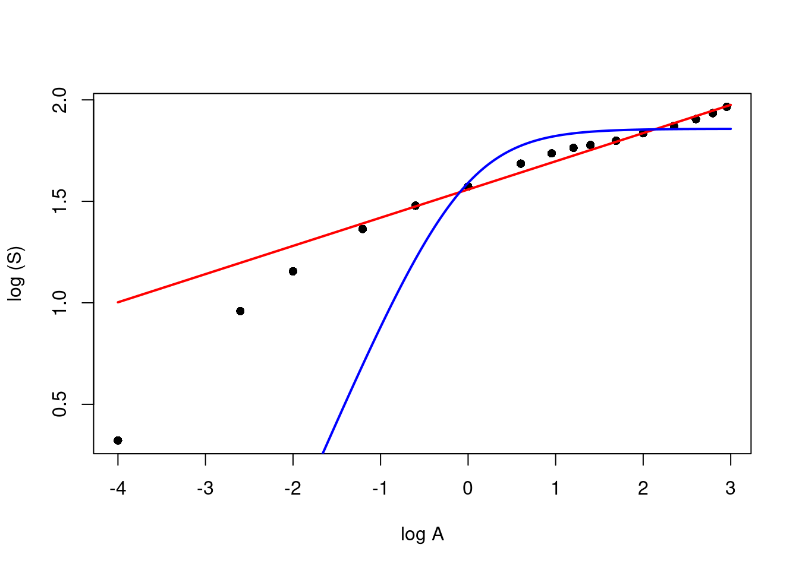

Stat4: Lösung
Musterlösung Übung 4.1: Nicht-lineare Regression
Übungsaufgabe (hier so ausführlich formuliert, wie dies auch in der Klausur der Fall sein wird)
- Laden Sie den Datensatz Curonia_spit.xlsx. Dieser enthält gemittelte
Pflanzenartenzahlen (Species.richness) von geschachtelten Plots (Vegetationsaufnahmen) der Pflanzengesellschaft Lolio-Cynosuretum im Nationalpark Kurische Nehrung (Russland) auf Flächengrössen (Area) von 0.0001 bis 900 m². - Ermitteln Sie den funktionellen Zusammenhang, der die Zunahme der Artenzahl mit der Flächengrösse am besten beschreibt. Berücksichtigen Sie dabei mindestens die Potenzfunktion (power function), die logarithmische Funktion (logarithmic function) und eine Funktion mit Sättigung (saturation, asymptote) Ihrer Wahl
- Bitte erklären und begründen Sie die einzelnen Schritte, die Sie unternehmen, um zu diesem Ergebnis zu kommen. Dazu erstellen Sie bitte ein Word-Dokument, in das Sie Schritt für Schritt den verwendeten R-Code, die dazu gehörigen Ausgaben von R, Ihre Interpretation derselben und die sich ergebenden Schlussfolgerungen für das weitere Vorgehen dokumentieren.
- Dieser Ablauf sollte insbesondere beinhalten:
- Überprüfen der Datenstruktur nach dem Einlesen, welches sind die abhängige(n) und welches die unabängige(n) Variablen
- Explorative Datenanalyse, um zu sehen, ob eine nicht-lineare Regression überhaupt nötig ist und ob evtl. Dateneingabefehler vorliegen vorgenommen werden sollten
- Definition von mindestens drei nicht-linearen Regressionsmodellen
- Selektion des/der besten Models/Modelle
- Durchführen der Modelldiagnostik für die Modelle in der engeren Auswahl, um zu entscheiden, ob das gewählte Vorgehen korrekt war oder ggf. angepasst werden muss
- Generieren aller Zahlen, Statistiken und Tabellen, die für eine wiss. Ergebnisdarstellung benötigt werden
- Formulieren Sie abschliessend einen Methoden- und Ergebnisteil (ggf. incl. adäquaten Abbildungen) zu dieser Untersuchung in der Form einer wissenschaftlichen Arbeit (ausformulierte schriftliche Zusammenfassung, mit je einem Absatz von ca. 60-100 Worten, resp. 3-8 Sätzen für den Methoden- und Ergebnisteil). D. h. alle wichtigen Informationen sollten enthalten sein, unnötige Redundanz dagegen vermieden werden.
- Abzugeben sind am Ende (a) Ein lauffähiges R-Skript; (b) begründeter Lösungsweg (Kombination aus R-Code, R Output und dessen Interpretation) und (c) ausformulierter Methoden- und Ergebnisteil (für eine wiss. Arbeit).
Musterlösung Übung 4.1 - Nicht-lineare Regression
Aus der Excel-Tabelle wurde das relevante Arbeitsblatt als csv gespeichert
curonian <- read.delim(here("data","Curonian_spit.csv"), sep=",")
str(curonian)'data.frame': 16 obs. of 3 variables:
$ X : int 1 2 3 4 5 6 7 8 9 10 ...
$ Area : num 0.0001 0.0025 0.01 0.0625 0.25 1 4 9 16 25 ...
$ Species.richness: num 2.1 9.1 14.3 23.1 30.1 37.4 48.5 54.5 58 59.9 ...summary(curonian) X Area Species.richness
Min. : 1.00 Min. : 0.0001 Min. : 2.10
1st Qu.: 4.75 1st Qu.: 0.2031 1st Qu.:28.35
Median : 8.50 Median : 12.5000 Median :56.25
Mean : 8.50 Mean :147.1453 Mean :50.09
3rd Qu.:12.25 3rd Qu.:131.2500 3rd Qu.:69.95
Max. :16.00 Max. :900.0000 Max. :92.40 # Explorative Datenanalyse
plot(Species.richness~Area, data = curonian)
Es liegt in der Tat ein nicht-linearer Zusammenhang vor, der sich gut mit nls analysieren lässt. Die Daten beinhalten keine erkennbaren Fehler, da der Artenreichtum der geschachtelten Plots mit der Fläche ansteigt.
# Potenzfunktion selbst definiert
if(!require(nlstools)){install.packages("nlstools")}Loading required package: nlstools
'nlstools' has been loaded.IMPORTANT NOTICE: Most nonlinear regression models and data set examplesrelated to predictive microbiolgy have been moved to the package 'nlsMicrobio'library(nlstools)
# power.model <- nls(Species.richness~c*Area^z, data = curonian)
# summary(power.model)Falls die Funktion so keine Ergebnisse liefert, oder das Ergebnis unsinnig aussieht, wenn man es später plottet, müsste man hier geeignete Startwerte angeben, die man aus der Betrachtung der Daten oder aus Erfahrungen mit der Funktion für ähnliche Datensets gewinnt,etwa so:
power.model <- nls(Species.richness~c * Area^z, start = (list(c = 1, z = 0.2)), data = curonian)
summary(power.model)
Formula: Species.richness ~ c * Area^z
Parameters:
Estimate Std. Error t value Pr(>|t|)
c 36.168960 1.408966 25.67 3.56e-13 ***
z 0.138941 0.007472 18.60 2.88e-11 ***
---
Signif. codes: 0 '***' 0.001 '**' 0.01 '*' 0.05 '.' 0.1 ' ' 1
Residual standard error: 4.142 on 14 degrees of freedom
Number of iterations to convergence: 9
Achieved convergence tolerance: 8.143e-06Das Ergebnis ist identisch
#logarithmische Funktion selbst definiert
logarithmic.model <- nls(Species.richness~b0 + b1 * log10(Area), data = curonian)Warning in nls(Species.richness ~ b0 + b1 * log10(Area), data = curonian): No starting values specified for some parameters.
Initializing 'b0', 'b1' to '1.'.
Consider specifying 'start' or using a selfStart modelsummary(logarithmic.model)
Formula: Species.richness ~ b0 + b1 * log10(Area)
Parameters:
Estimate Std. Error t value Pr(>|t|)
b0 43.333 1.358 31.91 1.78e-14 ***
b1 13.281 0.654 20.31 8.75e-12 ***
---
Signif. codes: 0 '***' 0.001 '**' 0.01 '*' 0.05 '.' 0.1 ' ' 1
Residual standard error: 5.265 on 14 degrees of freedom
Number of iterations to convergence: 1
Achieved convergence tolerance: 5.568e-09Zu den verschiedenen Funktionen mit Sättigungswert (Asymptote) gehören Michaelis-Menten, das aymptotische Modell durch den Ursprung und die logistische Funktion. Die meisten gibt es in R als selbststartende Funktionen, was meist besser funktioniert als wenn man sich selbst Gedanken über Startwerte usw. machen muss. Man kann sie aber auch selbst definieren
Im Folgenden habe ich ein paar unterschiedliche Sättigungsfunktionen mit verschiedenen Einstellungen durchprobiert, um zu zeigen, was alles passieren kann…
micmen.1 <- nls(Species.richness~SSmicmen(Area, Vm, K), data = curonian)
summary(micmen.1)
Formula: Species.richness ~ SSmicmen(Area, Vm, K)
Parameters:
Estimate Std. Error t value Pr(>|t|)
Vm 72.0108 4.2708 16.861 1.07e-10 ***
K 0.8477 0.4371 1.939 0.0729 .
---
Signif. codes: 0 '***' 0.001 '**' 0.01 '*' 0.05 '.' 0.1 ' ' 1
Residual standard error: 11.96 on 14 degrees of freedom
Number of iterations to convergence: 0
Achieved convergence tolerance: 3.383e-06# Dasselbe selbst definiert (mit default-Startwerten)
micmen.2 <- nls(Species.richness~Vm*Area/(K+Area), data = curonian)Warning in nls(Species.richness ~ Vm * Area/(K + Area), data = curonian): No starting values specified for some parameters.
Initializing 'Vm', 'K' to '1.'.
Consider specifying 'start' or using a selfStart modelsummary(micmen.2)
Formula: Species.richness ~ Vm * Area/(K + Area)
Parameters:
Estimate Std. Error t value Pr(>|t|)
Vm 46.7020 9.6748 4.827 0.000268 ***
K -2.1532 0.5852 -3.679 0.002477 **
---
Signif. codes: 0 '***' 0.001 '**' 0.01 '*' 0.05 '.' 0.1 ' ' 1
Residual standard error: 35.14 on 14 degrees of freedom
Number of iterations to convergence: 23
Achieved convergence tolerance: 9.097e-06Hier ist das Ergebnis deutlich verschieden, ein Phänomen, das einem bei nicht-linearen Regressionen anders als bei linearen Regressionen immer wieder begegnen kann, da der Iterationsalgorithmus in lokalen Optima hängen bleiben kann. Oftmals dürfte die eingebaute Selbststartfunktion bessere Ergebnisse liefern, aber das werden wir unten sehen.
# Dasselbe selbst definiert (mit sinnvollen Startwerten, basierend auf dem Plot)
micmen.3 <- nls(Species.richness~Vm*Area/(K+Area), start = list(Vm = 100, K = 1), data = curonian)
summary(micmen.3)
Formula: Species.richness ~ Vm * Area/(K + Area)
Parameters:
Estimate Std. Error t value Pr(>|t|)
Vm 72.0111 4.2708 16.861 1.07e-10 ***
K 0.8477 0.4371 1.939 0.0729 .
---
Signif. codes: 0 '***' 0.001 '**' 0.01 '*' 0.05 '.' 0.1 ' ' 1
Residual standard error: 11.96 on 14 degrees of freedom
Number of iterations to convergence: 22
Achieved convergence tolerance: 7.003e-06Wenn man sinnvollere Startwerte als die default-Werte (1 für alle Parameter) eingibt, hier etwas einen mutmasslichen Asymptoten-Wert (aus der Grafik) von Vm = ca. 100, dann bekommt man das gleiche Ergebnis wie bei der Selbsstartfunktion
# Eine asymptotische Funktion durch den Ursprung (mit implementierter Selbststartfunktion)
asym.model <- nls(Species.richness~SSasympOrig(Area, Asym, lrc), data = curonian)
summary(asym.model)
Formula: Species.richness ~ SSasympOrig(Area, Asym, lrc)
Parameters:
Estimate Std. Error t value Pr(>|t|)
Asym 68.5066 4.4278 15.472 3.38e-10 ***
lrc 0.1184 0.4864 0.244 0.811
---
Signif. codes: 0 '***' 0.001 '**' 0.01 '*' 0.05 '.' 0.1 ' ' 1
Residual standard error: 13.88 on 14 degrees of freedom
Number of iterations to convergence: 0
Achieved convergence tolerance: 2.867e-06logistic.model <- nls(Species.richness~SSlogis(Area, asym, xmid, scal), data = curonian)
summary(logistic.model)Error in nls(y ~ 1/(1 + exp((xmid - x)/scal)), data = xy, start = list(xmid= aux[1L], : Iterationenzahl überschritt Maximum 50
Das ist etwas, was einem bei nls immer wieder passieren kann. Die Iteration ist nach der eingestellten max. Iterationszahl noch nicht zu einem Ergebnis konvergiert. Um ein Ergebnis für diese Funktion zu bekommen, müsste man mit den Einstellungen von nls „herumspielen“, etwas bei den Startwerten oder den max. Um das effizient zu machen, braucht man aber etwas Erfahrung Interationszahlen (man kann z. B. manuell die Maximalzahl der Iterationen erhöhen, indem man in den Funktionsaufruf etwa maxiter =100 als zusätzliches Argument reinschreibtn).
#Logistische Regression mit Startwerten
logistic.model.2 <- nls(Species.richness~asym/(1 + exp((xmid-Area) / scal)),
control = nls.control(maxiter = 100),
start = (list(xmid = 1, scal = 0.2, asym = 100)), data = curonian)
summary(logistic.model.2)
Formula: Species.richness ~ asym/(1 + exp((xmid - Area)/scal))
Parameters:
Estimate Std. Error t value Pr(>|t|)
xmid 3.970 1.608 2.469 0.0282 *
scal 4.112 1.676 2.453 0.0290 *
asym 73.634 4.507 16.339 4.79e-10 ***
---
Signif. codes: 0 '***' 0.001 '**' 0.01 '*' 0.05 '.' 0.1 ' ' 1
Residual standard error: 12.11 on 13 degrees of freedom
Number of iterations to convergence: 59
Achieved convergence tolerance: 9.676e-06# Vergleich der Modellgüte mittels AICc
library(AICcmodavg)
cand.models <- list()
cand.models[[1]] <- power.model
cand.models[[2]] <- logarithmic.model
cand.models[[3]] <- micmen.1
cand.models[[4]] <- micmen.2
cand.models[[5]] <- asym.model
cand.models[[6]] <- logistic.model.2
Modnames<-c("Power", "Logarithmic", "Michaelis-Menten (SS)", "Michaelis-Menten",
"Asymptotic through origin", "Logistische Regression")
aictab(cand.set=cand.models, modnames=Modnames)
Model selection based on AICc:
K AICc Delta_AICc AICcWt Cum.Wt LL
Power 3 96.75 0.00 0.98 0.98 -44.38
Logarithmic 3 104.43 7.68 0.02 1.00 -48.21
Michaelis-Menten (SS) 3 130.67 33.92 0.00 1.00 -61.34
Logistische Regression 4 133.53 36.78 0.00 1.00 -60.95
Asymptotic through origin 3 135.44 38.69 0.00 1.00 -63.72
Michaelis-Menten 3 165.17 68.42 0.00 1.00 -78.58Diese Ergebnistabelle vergleicht die Modellgüte zwischen den fünf Modellen, die wir in unsere Auswahl reingesteckt haben. Alle haben drei geschätzte Parameter (K), also zwei Funktionsparameter und die Varianz. Das beste Modell (niedrigster AICc bzw. Delta = 0) hat das Potenzmodell (power). Das zweitbeste Modell (logarithmic) hat bereits einen Delta-AICc von mehr als 4, ist daher statistisch nicht relevant. Das zeigt sich auch am Akaike weight, das für das zweite Modell nur noch 2 % ist. Die verschiedenen Modelle mit oberem Grenzwert (3-5) sind komplett ungeeignet.
# Modelldiagnostik für das beste Modell
library(nlstools)
plot(nlsResiduals(power.model))
Links oben sieht man zwar ein Muster (liegt daran, dass in diesem Fall die Plots geschachtelt, und nicht unabhängig waren), aber jedenfalls keinen problematischen Fall wie einen Bogen oder einen Keil. Der QQ-Plot rechts unten ist völlig OK. Somit haben wir auch keine problematische Abweichung von der Normalverteilung der Residuen. Da es sich bei den einzelnen Punkten allerdings bereits um arithmetische Mittelwerte aus je 8 Beobachtungen handelt, hätte man sich auch einfach auf das Central Limit Theorem beziehen können, das sagt, dass Mittelwerte automatisch einer Normalverteilung folgen.
# Ergebnisplot
plot(Species.richness~Area, pch = 16, xlab = "Fläche [m²]", ylab = "Artenreichtum", data = curonian)
xv <- seq(0, 1000, by = 0.1)
yv <- predict(power.model, list(Area = xv))
lines(xv, yv, lwd = 2, col = "red")
yv2 <- predict(micmen.1, list(Area = xv))
lines(xv, yv2, lwd = 2, col = "blue")
Das ist der Ergebnisplot für das beste Modell. Wichtig ist, dass man die Achsen korrekt beschriftet und nicht einfach die mehr oder weniger kryptischen Spaltennamen aus R nimmt.
Im Weiteren habe ich noch eine Sättigungsfunktion (Michaelis-Menten mit Selbststarter) zum Vergleich hinzugeplottet
Man erkennt, dass die Sättigungsfunktion offensichtlich den tatsächlichen Kurvenverlauf sehr schlecht widergibt. Im mittleren Kurvenbereich sind die Schätzwerte zu hoch, für grosse Flächen dann aber systematisch viel zu niedrig. Man kann die Darstellung im doppeltlogarithmischen Raum wiederholen, um die Kurvenanpassung im linken Bereich besser differenzieren zu können:
# Ergebnisplot Double-log
plot(log10(Species.richness)~log10(Area), pch = 16, xlab = "log A", ylab = "log (S)", data = curonian)
xv <- seq(0, 1000, by = 0.0001)
yv <- predict(power.model, list(Area = xv))
lines(log10(xv), log10(yv), lwd = 2, col = "red")
yv2 <- predict(micmen.1, list(Area=xv))
lines(log10(xv), log10(yv2), lwd = 2, col = "blue")
Auch hier sieht man, dass die rote Kurve zwar nicht perfekt, aber doch viel besser als die blaue Kurve ist.